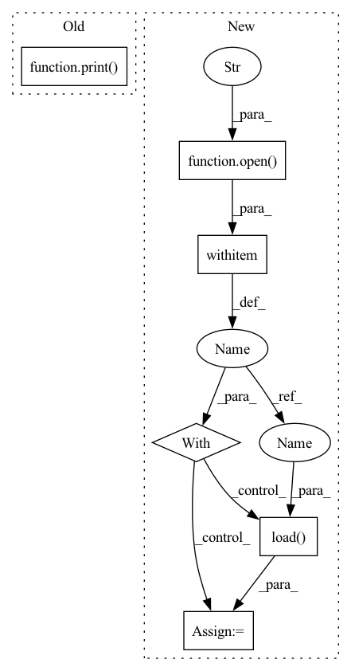

Pattern ID :31913
Before Change
.T
)
print( xs.shape)
print(us.shape)
// For plotting
xs = np.reshape(xs, (-1, 11, 6))After Change
path = dir_path+"/../../datasets/double_integrator/"
with open (path+"xs.pkl", "rb") as f:
xs = pickle.load(f )
with open(path+"us.pkl", "rb") as f:
us = pickle.load(f)
In pattern: SUPERPATTERN
Frequency: 3
Non-data size: 6
Instances Fragment ID: 93240815
Project Name: mit-acl/nn_robustness_analysis
Commit Name: c9b51e13d331027e4154999bc43026a9daf05ae0
Time: 2021-11-09
Author: mfe@mit.edu
File Name: nn_closed_loop/nn_closed_loop/utils/nn.py
M Class Name: AnonimousClass
N Class Name: AnonimousClass
M Method Name: load_data(1)
N Method Name: load_data(0)
M Parent Class:
N Parent Class:
M File Name: nn_closed_loop/nn_closed_loop/utils/nn.py
N File Name: nn_closed_loop/nn_closed_loop/utils/nn.py
M Start Line: 91
M End Line: 113
N Start Line: 96
N End Line: 126
Before Change
)
print(xs.shape)
print( us.shape)
// For plotting
xs = np.reshape(xs, (-1, 11, 6))
us = np.reshape(us, (-1, 11, 3))After Change
with open(path+"xs.pkl", "rb") as f:
xs = pickle.load(f)
with open (path+"us.pkl", "rb") as f:
us = pickle.load( f)
elif system == "quadrotor":
import pandas as pd Fragment ID: 93240812
Project Name: mit-acl/nn_robustness_analysis
Commit Name: c9b51e13d331027e4154999bc43026a9daf05ae0
Time: 2021-11-09
Author: mfe@mit.edu
File Name: nn_closed_loop/nn_closed_loop/utils/nn.py
M Class Name: AnonimousClass
N Class Name: AnonimousClass
M Method Name: load_data(1)
N Method Name: load_data(0)
M Parent Class:
N Parent Class:
M File Name: nn_closed_loop/nn_closed_loop/utils/nn.py
N File Name: nn_closed_loop/nn_closed_loop/utils/nn.py
M Start Line: 91
M End Line: 113
N Start Line: 96
N End Line: 126
Before Change
if task is None:
print("[1] Map PTB-XL to MIMIC-III")
mapped_ptbxl = map_to_mimiciii(args.ptbxl_dir, args.mimic_dir)
print( "[2] Encode mapped PTB-XL database")
encoded_ptbxl = encode_ptbxl(args.ptbxl_dir, ptbxl_database=mapped_ptbxl)
print("[3] Instantiate templates based on the encoded PTB-XL")
sampled_data, grounding_data = instantiate_template(
ptbxl_dir=args.ptbxl_dir,After Change
sampled_data = pickle.load(f)
with open(args.derived_grounding_data, "rb") as f:
derived_grounding_data = pickle.load(f)
with open (args.independent_grounding_data, "rb") as f:
independent_grounding_data = pickle.load( f)
manifest(sampled_data, derived_grounding_data, independent_grounding_data, args.dest)
if __name__ == "__main__":
parser = get_parser() Fragment ID: 93240811
Project Name: jwoo5/fairseq-signals
Commit Name: 1865c0c83ba4ae18aa46838313c7350b8b440f60
Time: 2023-02-25
Author: ojw0123@korea.ac.kr
File Name: fairseq_signals/data/ecg_text/preprocess/ptbxl_qa_pipeline.py
M Class Name: AnonimousClass
N Class Name: AnonimousClass
M Method Name: main(1)
N Method Name: main(1)
M Parent Class:
N Parent Class:
M File Name: fairseq_signals/data/ecg_text/preprocess/ptbxl_qa_pipeline.py
N File Name: fairseq_signals/data/ecg_text/preprocess/ptbxl_qa_pipeline.py
M Start Line: 88
M End Line: 122
N Start Line: 108
N End Line: 161
Before Change
self.querysz = self.n_way * self.k_query // number of samples per set for evaluation
self.resize = resize // resize to
self.startidx = startidx // index label not from 0, but from startidx
print( "shuffle DB :%s, b:%d, %d-way, %d-shot, %d-query, resize:%d" % (
mode, batchsz, n_way, k_shot, k_query, resize))
if mode == "train":
self.transform = transforms.Compose([lambda x: Image.open(x).convert("RGB"),
transforms.Resize((self.resize, self.resize)),After Change
with open(os.path.join(root, path_s), "rb") as f:
subgraph_list = pickle.load(f)
with open (os.path.join(root, path_l), "rb") as f:
subgraph2label = pickle.load( f)
self.subgraph2label = subgraph2label
self.subgraph_list = subgraph_list Fragment ID: 93240817
Project Name: mims-harvard/g-meta
Commit Name: aed3468b5f71c857f788169b34b97a411628930b
Time: 2020-03-02
Author: cosamhkx@gmail.com
File Name: src/subgraph_data_processing.py
M Class Name: Subgraphs
N Class Name: Subgraphs
M Method Name: __init__(9)
N Method Name: __init__(9)
M Parent Class: Dataset
N Parent Class: Dataset
M File Name: src/subgraph_data_processing.py
N File Name: src/subgraph_data_processing.py
M Start Line: 44
M End Line: 70
N Start Line: 42
N End Line: 53